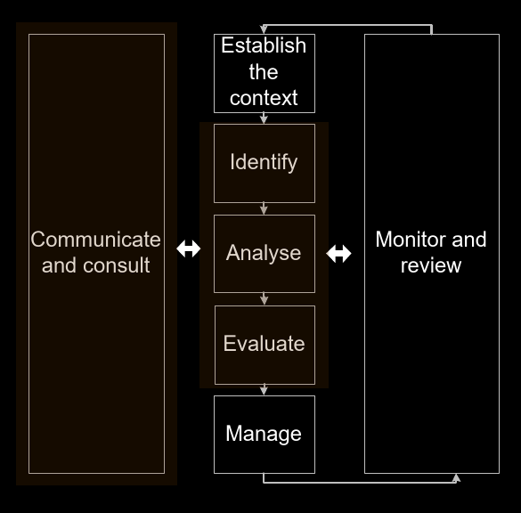
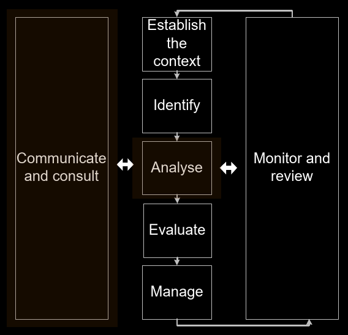
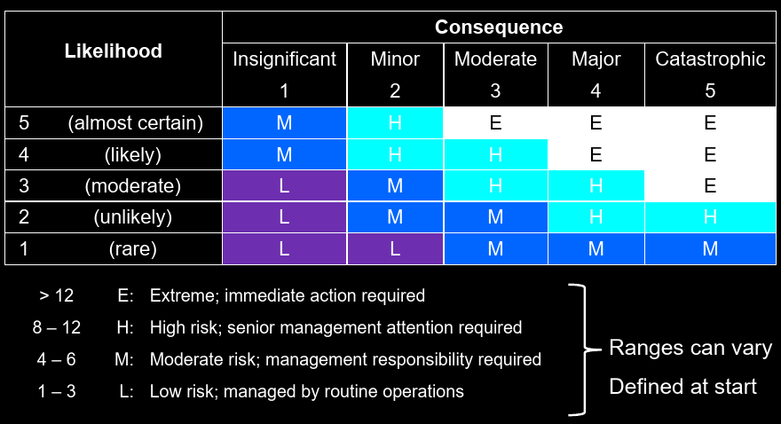
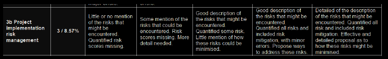

Risk Management Process

Risk management techniques can be used to
┌──────────────┬───────────────────────────────────────────┬──────┐
│Company risk │ Business operations │ │
├──────────────┼───────────────────────────────────────────┼──────┤
│Project risk │ Planning and delivery of a project │ │
├──────────────┼───────────────────────────────────────────┼──────┤
│Process risk │ Planning and delivery of a product/service│ │
├──────────────┼───────────────────────────────────────────┼──────┤
│Financial risk│ loss of income / wealth │ │
├──────────────┼───────────────────────────────────────────┼──────┤
│Safety riskes │ injuries; Death │
└──────────────┴───────────────────────────────────────────┴──────┘


Risk assessment is a critical part of a risk management


Likelihood and consequence┌─────┬───────────────┬────────────────────────────────────────────┐
│Level│ Likelihood │ Example Descriptions │
├─────┼───────────────┼────────────────────────────────────────────┤
│1 │ Rare │ May occur only in exceptional circumstances│
├─────┼───────────────┼────────────────────────────────────────────┤
│2 │ Unlikely │ Could occur at some time │
├─────┼───────────────┼────────────────────────────────────────────┤
│3 │ Possible │ Might occur at some time │
├─────┼───────────────┼────────────────────────────────────────────┤
│4 │ Likely │ Will probably occur in most circumstances │
├─────┼───────────────┼────────────────────────────────────────────┤
│5 │ Almost certain│ Is expected to occur in most circumstances │
└─────┴───────────────┴────────────────────────────────────────────┘
┌─────┬───────────────┬──────────────────────────────────────────────────────┐
│Level│ Likelihood │ Example Descriptions │
├─────┼───────────────┼──────────────────────────────────────────────────────┤
│1 │ Rare │ Has never occured │
├─────┼───────────────┼──────────────────────────────────────────────────────┤
│2 │ Unlikely │ Has occurred but only under exceptional circumstances│
├─────┼───────────────┼──────────────────────────────────────────────────────┤
│4 │ Possible │ Sometimes occurs │
├─────┼───────────────┼──────────────────────────────────────────────────────┤
│5 │ Almost certain│ Always occurs │
└─────┴───────────────┴──────────────────────────────────────────────────────┘
┌─────┬──────────────┬──────────────────────────────────────────────────────────────────────────────────────────────────────────────────────┬───────────────────────────────────────────────────────────────────────────────────────────────────────────────────────┐
│Level│ Consequnces │ Example Descriptions │ │
├─────┼──────────────┼──────────────────────────────────────────────────────────────────────────────────────────────────────────────────────┼───────────────────────────────────────────────────────────────────────────────────────────────────────────────────────┤
│1 │ Insignificant│ No injuries; low financial loss; no inconvenience │ │
├─────┼──────────────┼──────────────────────────────────────────────────────────────────────────────────────────────────────────────────────┼───────────────────────────────────────────────────────────────────────────────────────────────────────────────────────┤
│2 │ Minor │ First asid treatment; on-site release immediately contained; medium financial loss; minor inconvenience │ │
├─────┼──────────────┼──────────────────────────────────────────────────────────────────────────────────────────────────────────────────────┼───────────────────────────────────────────────────────────────────────────────────────────────────────────────────────┤
│3 │ Moderate │ Medical treatment required; on-site release contained with outside assitance; high financial loss. Some inconvenience│ │
├─────┼──────────────┼──────────────────────────────────────────────────────────────────────────────────────────────────────────────────────┼───────────────────────────────────────────────────────────────────────────────────────────────────────────────────────┤
│4 │ Major │ Extensive injuries │ loss of production capability; off-site release with no detrimental effects; major financial loss. Major inconvenience│
├─────┼──────────────┼──────────────────────────────────────────────────────────────────────────────────────────────────────────────────────┼───────────────────────────────────────────────────────────────────────────────────────────────────────────────────────┤
│5 │ Catastrophic │ Death; toxic release off=site with detrimental effect; huge financial loss. Completion of task not possible │ │
└─────┴──────────────┴──────────────────────────────────────────────────────────────────────────────────────────────────────────────────────┴───────────────────────────────────────────────────────────────────────────────────────────────────────────────────────┘

LEVEL OF RISK = LIKELIHOOD X CONSEQUENCE
┌──────────────────┬──────────────────┬──────────┬─────────────┬──────────┬─────────────────┐
│Likelihood │ Consquence │ │ │ │ │
├──────────────────┼──────────────────┼──────────┼─────────────┼──────────┼─────────────────┤
│LIkelihood │ Insignificant (1)│ Minor (2)│ Moderate (3)│ Major (4)│ Catastrophic (5)│
├──────────────────┼──────────────────┼──────────┼─────────────┼──────────┼─────────────────┤
│5 (almost certain)│ 5 │ 10 │ 15 │ 20 │ 25 │
├──────────────────┼──────────────────┼──────────┼─────────────┼──────────┼─────────────────┤
│4 (likely) │ 4 │ 8 │ 12 │ 16 │ 20 │
├──────────────────┼──────────────────┼──────────┼─────────────┼──────────┼─────────────────┤
│3 (moderate) │ 3 │ 6 │ 9 │ 12 │ 15 │
├──────────────────┼──────────────────┼──────────┼─────────────┼──────────┼─────────────────┤
│2 (unlikely) │ 2 │ 4 │ 6 │ 8 │ 10 │
├──────────────────┼──────────────────┼──────────┼─────────────┼──────────┼─────────────────┤
│1 (rare) │ 1 │ 2 │ 3 │ 4 │ 5 │
└──────────────────┴──────────────────┴──────────┴─────────────┴──────────┴─────────────────┘
EXAMPLE
 Normal  More conservative
More conservative  More agressive
More agressive
option A vs option B

risk management


risk management
likelihood that these would happen?consequence if these were to happenlikelihood, consequence and risk scores